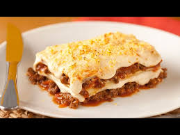

Lasanha à Bolonhesa

Ingredientes
- 500g de massa para lasanha
- 500g de carne moída
- 1 cebola picada
- 2 dentes de alho picados
- 1 lata de molho de tomate
- 200g de queijo mussarela
- 200g de presunto
- Sal, pimenta e temperos a gosto
Modo de Preparo
- Refogue a cebola e o alho, depois acrescente a carne moída e temperos.
- Adicione o molho de tomate e cozinhe por 10 minutos.
- Em uma forma, alterne camadas de massa, carne, queijo e presunto.
- Repita as camadas até acabar os ingredientes, terminando com queijo.
- Asse em forno pré-aquecido a 180°C por 30 minutos.
Dicas
- Experimente adicionar uma camada de requeijão para um sabor cremoso.
- Use queijo parmesão ralado por cima para gratinar.